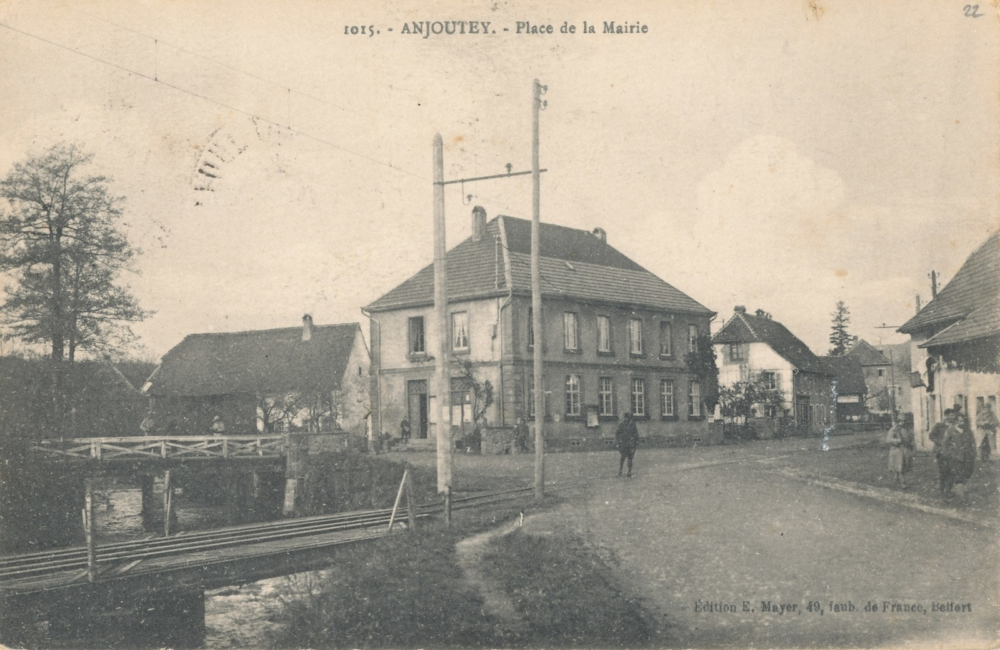
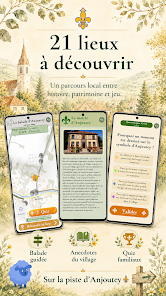
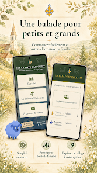
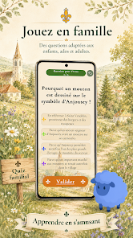
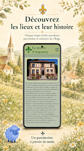
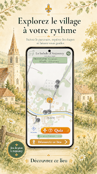

Balade guidée
La carte et le GPS vous accompagnent tout au long du parcours dans le village.
Une aventure à deux pas de chez vous
Les secrets d’Anjoutey sont sur votre chemin. Explorez, jouez et remontez le temps en famille, téléphone en main.
Choisissez votre appareil pour commencer.
⌂ Envie de rester chez vous ? La visite virtuelle est aussi disponible.

La curiosité vous va bien
La balade vous conduit d’étape en étape dans Anjoutey. À chaque lieu, découvrez une histoire, regardez des photographies anciennes puis répondez à un quiz adapté à l’âge des participants.
La carte et le GPS vous accompagnent tout au long du parcours dans le village.
Explorez le patrimoine local grâce aux récits et aux photographies d’autrefois.
Les questions sont adaptées aux enfants, aux adolescents et aux adultes.
Une option permet de simuler le parcours depuis chez vous pour découvrir ou tester l’application.
Anjoutey au fil du temps
Des vues actuelles interprétées au fusain, accompagnées d’une véritable carte postale ancienne.



Dans l’application
Faites glisser les images pour découvrir le parcours.





Commencez maintenant
Vous utilisez Android ? Privilégiez l’application : installez-la directement depuis Google Play pour découvrir la balade.
Installer sur Google PlaySur les autres appareils, découvrez la balade directement dans votre navigateur, sans installation. La version web reste aussi accessible sur Android.
Ouvrir la version webSur iPhone ou iPad : pour ajouter un raccourci, ouvrez la page dans Safari, puis choisissez Partager et « Sur l’écran d’accueil ».
Une idée à partager ?
Vous connaissez une histoire sur Anjoutey, vous avez une suggestion ou vous souhaitez simplement donner votre avis sur la balade ? Je serai heureux de vous lire.
Envoyer un message VivienJardotID@Outlook.com
Votre avis compte
Partagez votre avis ou vos souvenirs
Une idée, une information sur Anjoutey, un souvenir à raconter ou simplement un petit mot pour dire que la balade vous plaît ? Écrivez-le ici.
Les messages sont vérifiés avant leur publication afin d’éviter les contenus indésirables.